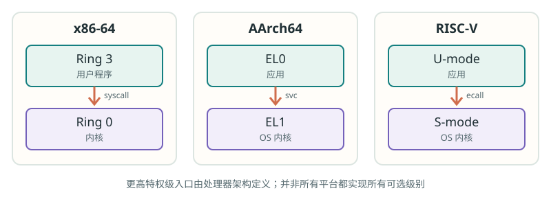

用户程序为什么不能直接写任意物理地址、修改页表或关闭中断？因为处理器提供了特权级和受控的异常入口，操作系统利用它们建立保护边界。理解这条边界时，必须区分三件事：权限级别变化、系统调用本身，以及调度器是否切换到另一个任务。它们经常同时出现，但不是同一件事。

一、特权级别
1. x86：Ring 与 CPL
传统 x86 保护模型定义 Ring 0–3，Ring 0 权限最高，Ring 3 通常运行应用程序。现代 x86-64 操作系统主要使用 Ring 0 和 Ring 3；CPL（Current Privilege Level）反映当前代码段的特权级。页表权限、段权限和特权指令共同参与保护，不能把“Ring 3 只能访问自己的虚拟地址”理解为单一寄存器就完成的隔离。
2. Arm：Exception Level
AArch64 使用 EL0–EL3 的异常级模型：EL0 常用于应用，EL1 常用于 OS 内核，EL2 可用于 Hypervisor，EL3 用于 Secure Monitor/安全状态管理。EL2 和 EL3 在实现中可以是可选的；TrustZone 的 Secure/Non-secure 安全状态与 Exception Level 是相关但不同的维度，不能把“安全世界”简单等同于 EL3。
3. RISC-V：U/S/M 模式
RISC-V 特权架构定义 U-mode、S-mode 和 M-mode。常见 Unix-like OS 在 S-mode 运行，应用在 U-mode 运行，M-mode 通常由更底层的固件或执行环境使用。Hypervisor 扩展还增加了虚拟化相关模式。具体平台可以只实现部分特权模式，因此不能把所有 RISC-V 芯片都假设成拥有完全相同的层级。
| 架构 | 应用常用级别 | OS 常用级别 | 额外说明 |
|---|---|---|---|
| x86-64 | Ring 3 | Ring 0 | VMX root/non-root 是虚拟化运行模式，不是额外的 Ring；SMM 也是独立的系统管理模式 |
| AArch64 | EL0 | EL1 | EL2/EL3 可选；安全状态与 EL 组合 |
| RISC-V | U-mode | S-mode | M-mode 是最高特权级，具体平台实现可不同 |
架构依据可查阅 Intel SDM、Arm 的AArch64 Exception Model 和 RISC-V Privileged Architecture。
二、系统调用全流程
系统调用是应用请求内核服务的受控入口。以 Linux x86-64 为例，C 库的 write() 包装函数按 ABI 约定放置系统调用号和参数，再执行 syscall 指令；处理器进入内核入口代码，内核检查参数、访问权限和文件对象，再执行对应服务并返回结果。不同架构的入口指令和参数寄存器不同。
1. x86-64 Linux 系统调用约定
| 寄存器 | 用途 |
|---|---|
rax | 系统调用号；返回时保存结果 |
rdi, rsi, rdx | 第 1–3 个参数 |
r10, r8, r9 | 第 4–6 个参数 |
rcx, r11 | syscall 指令使用的返回相关状态寄存器 |
内核内部的具体入口函数名和分派实现可能随内核版本变化；用户态程序依赖的是系统调用 ABI，而不是某个内部 C 函数名。对大多数系统调用，内核返回负错误码；C 库包装层通常把它转换为 -1 并设置 errno。
2. 用最小程序观察 write()
本章配套的 hello.c 只调用一次 write()，减少动态链接和标准 I/O 缓冲对观察的干扰：
#include <unistd.h>
int main(void)
{
static const char message[] = "hello\n";
ssize_t written = write(STDOUT_FILENO, message,
sizeof(message) - 1);
return written == (ssize_t)(sizeof(message) - 1) ? 0 : 1;
}编译并观察：
cc -Wall -Wextra -O0 -g -o hello labs/ch04-syscall/hello.c
strace -e trace=write ./hello关键输出应包含一次对文件描述符 1 的 write 调用；时间戳、进程启动时的其他调用和具体格式会随环境变化。
逐步拆解：一次 write(1, "hello\\n", 6)
下面是 Linux x86-64 的概念执行路径。write() 的系统调用号为 1；C 函数调用 ABI 与内核系统调用 ABI 不是同一份寄存器约定。
- 用户态包装层：
write(fd, buf, len)通常由 libc 提供；调用约定把参数准备好，系统调用入口需要rax=1、rdi=fd、rsi=buf、rdx=len。 - 受控特权级切换：
syscall指令按架构规定进入内核入口；rcx、r11分别参与保存返回地址和标志，并不用于传递系统调用的第 4、5 个参数。 - 内核执行：验证文件描述符和用户缓冲区可访问性，沿文件操作接口发送数据。若标准输出指向终端、管道或文件，后续路径各不相同；可能只写入缓存。
- 返回与 errno：内核原始返回值可为写入字节数或负错误码；libc 将常见错误包装为返回
-1并设置errno。短写不等同于错误，通用程序需要处理部分写入。
三个不同的计数：“执行了一次系统调用”“发生用户态→内核态转换”“切换到另一进程”并不等价。strace 能看到系统调用边界，不会自动证明另一次任务切换已经发生。
三、strace实战
strace 记录目标程序执行的系统调用、参数、返回值和信号。Linux 上它主要利用 ptrace 等机制观察 tracee；因此跟踪本身会改变执行时序，不能把带有 strace 的运行时间当成无观测开销的真实性能。
# 只观察文件描述符相关调用
strace -e trace=read,write,openat,close ./hello
# 汇总系统调用次数与耗时
strace -c ./hello
# 把跟踪结果保存到文件
strace -o /tmp/hello.strace ./hello对于多线程程序，可以按需使用 -f 跟踪子进程/线程相关执行；对于权限受限的目标进程，可能需要相应权限。跟踪输出是诊断证据，不是完整的内核执行轨迹：它不会自动显示每一次内核函数调用，也不会解释所有异步设备事件。
四、上下文切换的成本
1. 系统调用不等于进程上下文切换
执行系统调用时，CPU 通常从用户态进入内核态，但内核仍然可以在发起调用的同一个任务上下文中执行。若系统调用很快完成并返回，调度器未必切换到另一个任务。只有任务阻塞、被抢占或调度策略选择了其他任务时，才会发生任务上下文切换。
2. 成本来自多个层面
系统调用路径可能涉及寄存器保存/恢复、特权级转换、参数校验和内核工作；任务上下文切换还可能涉及调度决策、内核栈切换、地址空间切换，以及缓存/TLB 工作集变化。是否刷新 TLB 取决于架构、地址空间标识和内核实现；向量寄存器状态也不一定在每次系统调用时全部保存。不能把这些成本概括成“每次 syscall 都刷新 TLB 并清空分支预测器”。
“一次系统调用固定需要多少 CPU 周期”没有通用答案。处理器型号、内核版本、缓解措施、虚拟化、调用参数、缓存状态和测量方法都会影响结果。原文中没有来源的纳秒/周期表和未经引用的生产环境百分比已移除。
3. 自己测量，而不是背数字
# 观察一个程序的系统调用数量与总耗时
strace -c ./your_program
# 观察硬件和软件事件（权限及事件可用性依平台而定）
perf stat -e cycles,instructions,context-switches \
-- ./your_program比较优化前后时，固定输入、编译选项、CPU 频率策略和重复次数；分开报告 syscall 数量、任务上下文切换数和总执行时间。减少小块 I/O 调用有时有帮助，但不能把“减少系统调用次数”当成所有程序的首要优化目标。
五、结语与下一章预告
系统调用是受控的特权级入口；上下文切换是调度器在任务之间转移执行权。两者可能连续发生，但不能混为一谈。下一章我们把视角从“应用如何进入内核”转向“内核如何被装入并开始运行”，追踪固件、引导加载器、内核和 PID 1 的交接过程。
实验复现：源码、调用轨迹和实际输出相互校验
环境：Linux、C 编译器、strace。在仓库根目录操作，非特权用户即可；strace 在受限容器中可能被禁用。
cc -std=c11 -Wall -Wextra -Werror -O0 -g \
-o /tmp/os-ch04-hello labs/ch04-syscall/hello.c
/tmp/os-ch04-hello
strace -e trace=write -o /tmp/os-ch04-write.trace /tmp/os-ch04-hello
grep 'write(1,' /tmp/os-ch04-write.trace
# 测试结束清理本人创建的文件
rm -f /tmp/os-ch04-hello /tmp/os-ch04-write.trace预期结果：程序向标准输出写出 hello 和换行；轨迹中可见 write(1, ..., 6) = 6 一类记录。若失败，核对编译器、ptrace 权限、strace 是否安装及输出是否被重定向。
自动验收边界：CI 中的 scripts/test_labs.py 实际编译并检查 stdout/退出码；本段 strace 轨迹仍需在允许 ptrace 的 Linux 环境中单独观察，不能把两者混为一次已通过的测试。
本章自测 · 从概念走向验证
用 strace 观察 write()，并解释系统调用进入内核态为什么不必然意味着进程上下文切换。
查看思考提示
分别标记权限级转换、内核服务执行、任务阻塞/唤醒和调度器选择。